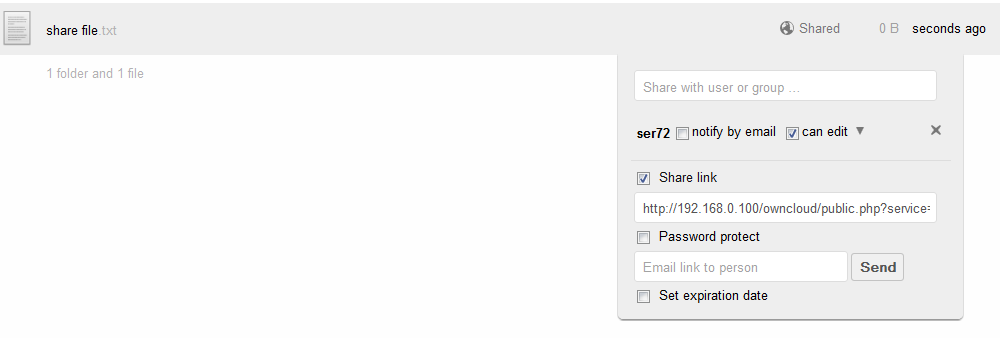
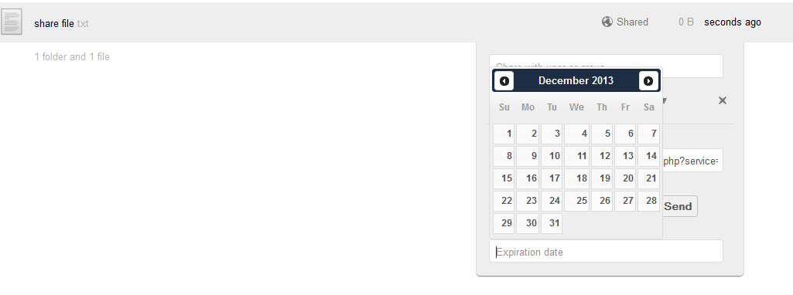

Utilization¶
An ownCloud user may share files or entire folders with other individuals. The method of sharing is the same.
Share as a link¶
In the event that an ownCloud user desires to share a file with a non-ownCloud user, the file may be shared as a link. To share as a link, hover over the line containing the file and select Share. Then select the check box next to “Share link”

The link is then shown in the text box. The link may be copied and pasted into an email and sent to the other user. Alternatively, if email is setup within ownCloud, the sharing user may input the shared with user’s email address in the text box and select send. The shared user will then receive an email from the ownCloud server with the link.
There may be circumstances where the file owner wants some security on the link so it cannot be accessed by anyone other than the desired person. To do this, the link may be Password Protected by selecting the “Password Protect” checkbox and entering a desired password.

Setting Expiration Date¶
ownCloud allows the sharing user to expire a file or folder share at a given date. This expiration applies to all shares within the folder as well. So, if a user expires a folder share, all files within the folder will no longer be shared.
To set an expiration, select the Set expiration date checkbox and then select the expiration date. (The calendar will appear when the mouse is clicked in the Expiration date text box.
